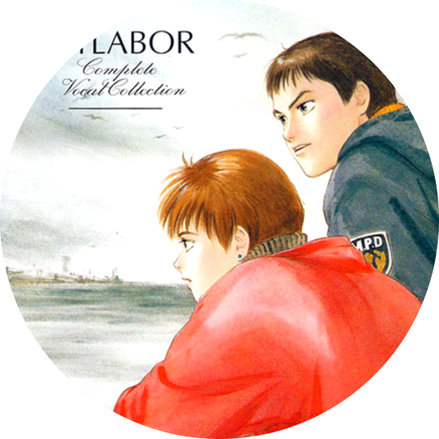

ABOUT ME
歡迎來到我的個人部落格！在這裡，我將分享我的學習經驗、研究成果和生活點滴。
 |
Caesar Hsu國立台北教育大學大四學生 |
我是一名大學學生，目前正在精進人工智慧 、 遊戲設計 、 系統架構 與 軟體工程，熱愛學習知識
同時也喜歡分享我的學習經驗與研究成果。希望透過這個平台，能夠與更多志同道合的朋友交流，並一起成長。
另外我平時也熱愛音樂和遊戲，享受在創作和探索中獲得的樂趣。